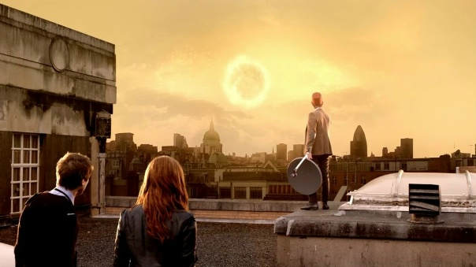

Эра Одиннадцатого Доктора (5 сезон)
<<< НАЗАД ||| 13. Большой взрыв ||| ДАЛЬШЕ >>>
или
ДАЛЬШЕ >>> к спин-офф сериалу: Приключения Сары Джейн
+ Original [ENG]
Субтитры: Русские {TrueTransLate} + Английские
 | Весь 5-й сезон (13 серий) |
The Big Bang
Дата выхода: 26 июня 2010
Формат: 55-минутный эпизод
| Варианты озвучек: | * Разные: смотрите по инструкции |
|---|---|
| Скачивание и просмотр: |
После событий серии «Пандорика открывается» Доктор заточён в Пандорике, ловушке, созданной альянсом его злейших врагов; Ривер Сонг в ловушке внутри взрывающейся ТАРДИС; пластиковая версия Рори-автона застрелила Эми Понд. Всё это вызвано взрывом ТАРДИС, но Земля, Луна и солнцеобразный объект в небе ещё существует.
Перед Рори является будущая версия Доктора, который даёт ему свою звуковую отвёртку и инструкции, как вызволить его из Пандорики — затем он исчезает. Рори делает это, и вместе с освобождённым Доктором они помещают в Пандорику Эми Понд, чтобы сохранить ей жизнь. Затем Доктор, используя манипулятор временной воронки Ривер Сонг, отправляется на 2000 лет в будущее, оставляя пластикового Рори охранять Эми.


Трейлер: